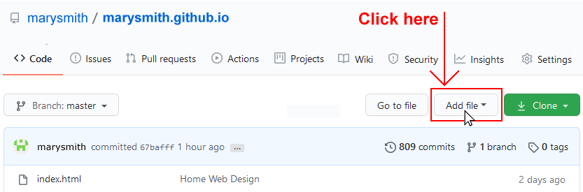
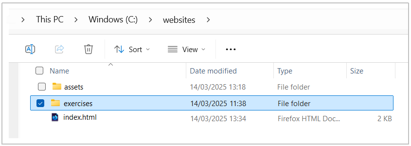

Learning Goals
At the end of this Tutorial, you will be able to:
- Understand that hyperlinks can have different interactive states.
- Use TailwindCSS to change the colour of hyperlinks.
- Use the TailwindCSS hover: and focus: prefixes to style hyperlinks when users interact with them.
- Change the colour, thickness and position of hyperlink underlines.
In this Tutorial you will style the hyperlinks in your van Gogh and Irish tourism web pages.
Styling hyperlinks with TailwindCSS
The simplest way to style hyperlinks is to change their text colour.
For example, the TailwindCSS class below displays hyperlink text in blue:
a { @apply text-blue-700; }The text-blue-700 class sets the colour of the hyperlink text.
However, hyperlinks are different from ordinary text elements such as <b> and <i>. Hyperlinks are interactive elements. Users can move a mouse pointer over them, select them with a keyboard, and click or tap them.
Hyperlink states
With TailwindCSS, you can change the appearance of a hyperlink when the user interacts with it.
Two important TailwindCSS prefixes for hyperlinks are:
- hover: — applies a style when the mouse pointer is positioned over the hyperlink.
- focus: — applies a style when the hyperlink receives keyboard or other input focus.
For example:
a {
@apply text-blue-700
hover:text-red-700
focus:text-red-700;
}In this example:
- text-blue-700 sets the normal hyperlink colour.
- hover:text-red-700 changes the hyperlink to red when the mouse pointer moves over it.
- focus:text-red-700 changes the hyperlink to red when it receives keyboard focus.
The colon character : separates the interactive state from the TailwindCSS utility that should be applied.
So you can read:
hover:text-red-700as:
When the hyperlink is hovered over, change its text colour to red.
Adding a smooth colour transition
When a hyperlink changes colour, you can add a short transition so that the change appears smoother.
TailwindCSS provides the following utilities:
- transition-colors — adds a transition when a colour changes.
- duration-300 — sets the duration of the transition to 300 milliseconds.
For example:
a {
@apply text-blue-700
hover:text-red-700
focus:text-red-700
transition-colors duration-300;
}Updating your van Gogh and Tourism hyperlinks
Now you will update the hyperlinks in two of your sample exercise files.
Van Gogh web page
- In VS Code, open your van Gogh HTML file.
- Find the <style type="text/tailwindcss"> block in the <head> of the page.
- Add the following style rule:
a {
@apply text-blue-700
hover:text-yellow-700
focus:text-yellow-700
transition-colors duration-300;
}Save the file and view the page in your browser.
Move your mouse pointer over a hyperlink and note how its colour changes.
Irish tourism web page
For your Irish tourism page, you can use a different colour combination:
a {
@apply text-green-800
hover:text-green-600
focus:text-green-600
transition-colors duration-300;
}Save your changes and view the page in your browser.
Styling hyperlink underlines
By default, hyperlinks are usually displayed with an underline. This helps users recognise that the text can be clicked.
TailwindCSS provides several utilities for controlling hyperlink underlines.
| TailwindCSS | Meaning |
|---|---|
| underline | Displays an underline below the hyperlink text. |
| no-underline | Removes the underline. |
| decoration-2 | Sets the thickness of the underline. |
| decoration-blue-700 | Sets the colour of the underline. |
| underline-offset-4 | Creates additional space between the text and its underline. |
Adding styled underlines
You can combine the hyperlink colour and underline utilities in one style rule.
For example:
a {
@apply text-blue-700
underline
decoration-2
decoration-blue-700
underline-offset-4
hover:text-red-700
hover:decoration-red-700
focus:text-red-700
focus:decoration-red-700
transition-colors duration-300;
}This rule:
- displays the hyperlink text in blue;
- adds an underline;
- makes the underline slightly thicker;
- sets the underline colour to blue;
- adds space between the text and its underline;
- changes both the text and underline to red when the hyperlink is hovered over or receives focus.
Removing underlines on hover
You can also remove the underline when the user interacts with a hyperlink.
For example:
a {
@apply text-blue-700
underline
decoration-2
underline-offset-4
hover:text-red-700
hover:no-underline
focus:text-red-700
focus:no-underline
transition-colors duration-300;
}The hover:no-underline utility removes the underline when the mouse pointer is positioned over the hyperlink.
The focus:no-underline utility does the same when the hyperlink receives focus.
Styling hyperlinks: summary
| TailwindCSS | Purpose |
|---|---|
| text-blue-700 | Sets the normal text colour. |
| hover:text-red-700 | Changes the text colour when the mouse pointer is over the hyperlink. |
| focus:text-red-700 | Changes the text colour when the hyperlink receives focus. |
| underline | Adds an underline. |
| no-underline | Removes an underline. |
| decoration-2 | Controls underline thickness. |
| decoration-blue-700 | Controls underline colour. |
| underline-offset-4 | Controls the space between the text and underline. |
| transition-colors | Adds a smooth transition between colour changes. |
| duration-300 | Sets the transition duration to 300 milliseconds. |
Uploading your files to GitHub
You are now ready to upload your work to your account on GitHub.
- Open a new tab in your web browser and go to github.com. If you are not already signed in to your GitHub account, sign in now.

- On your GitHub home page, click the ‘repo’ that holds your web pages. Its name will look as follows, where username is your chosen username on GitHub. username.github.io
- On the next GitHub screen displayed, near the right of the screen, you can see a button named Add file. Click on it.

- From the dropdown list displayed, choose the option Upload files.

- In File Explorer (Windows) or Finder (Apple Mac), drag-and-drop your 📁 exercises sub-folder to upload it io your repository on GitHub.

- Scroll down to the bottom of the GitHub screen, and accept or edit the short message (Add files via upload) in the Commit changes box.
- Finally, click the green Commit changes button to upload your files.

Your updated web pages are now published on GitHub at web addresses similar to the following:
https://username.github.io/exercises/page-4.html
https://username.github.io/exercises/page-5.html
It may take a few minutes for your uploaded files to appear on GitHub.